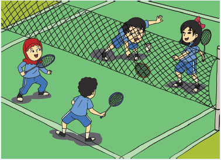

Pembelajaran 3

Udin dan teman-temannya bermain bulu tangkis.
Bersama dengan guru kamu melakukan permainan bulutangkis. Perhatikan cara memegang raket dan menyervis secara benar.
Udin ingin tahu lebih lanjut tentang profesi seorang atlet bulutangkis. Sepulang sekolah, ia menonton acara berita olahraga.
Berita olahraga tersebut menayangkan wawancara antara wartawan Desi Anwar dan atlet bulutangkis Susi Susanti.
Bacalah teks percakapan di bawah ini dengan membaca senyap
Berikut percakapan mereka:
A. Wawancara
Tirukan percakapan yang dilakukan oleh Susi Susanti dan Desi Anwar bersama temanmu menggunakan dialog di atas.
Ayah Udin suka sekali berolahraga bulutangkis. Udin kemudian menceritakan kembali wawancara yang ia lihat tadi. Ayah Udin tidak mendengar langsung percakapan antara Desi Anwar dan Susi Susanti. Ia mendengar isi wawancaranya dari Udin.
B. Laporan Udin
Sekarang perhatikan dua bentuk tulisan di atas. Carilah perbedaannya!
A. Wawancara:
B. Laporan Udin:
Kalimat dalam wawancara yang dilakukan oleh wartawan kepada Susi Susanti dinamakan kalimat langsung, karena kalimat tersebut langsung diucapkan oleh pembicara.
Kalimat dalam laporan yang diberikan Udin kepada ayahnya dikatakan kalimat tidak langsung, karena Udin menceritakan kembali informasi yang diketahui.
Buatlah dialog pendek dengan temanmu tentang profesi yang paling kalian sukai. Sertakan alasan kalian memilih profesi tersebut. Perhatikan cara penulisan seperti pada contoh wawancara antara Desi Anwar dan Susi Susanti, yaitu menggunakan tanda titik dua setelah nama masing-masing.
Tuliskan pengalamanmu dalam melakukan kegiatan dialog dengan teman.
Setelah menonton berita olahraga, Udin kemudian melihat acara hiburan lainnya di televisi. Ia melihat banyak pekerjaan lain, seperti penyanyi, pelawak, pesulap, pemain drama, pemain film, dan pemusik. Mereka semua disebut sebagai seniman.
Amati berbagai jenis pekerjaan sebagai seniman di bawah ini!
Jawab pertanyaan berikut:
1. Bagaimana perasaaanmu saat menonton tayangan artis atau seniman favoritmu?
2. Apa yang dapat kamu simpulkan dari tugas seorang seniman atau artis?
3. Apa yang harus dilakukan agar dapat menjadi seorang seniman yang berhasil?
4. Apa yang dapat kamu simpulkan dari tugas seorang atlet?
5. Apa yang harus dilakukan agar dapat menjadi seorang atlet yang berhasil?
Selain seniman, ada juga jenis profesi yang pekerjaannya membantu masyarakat.
Tuliskan nama pekerjaan dan tugas dari masing-masing profesi yang ada pada gambar di halaman sebelumnya.
Gambar A:
Gambar B:
Gambar C:
Diskusikan bersama teman, apa saja kewajiban yang harus dilakukan oleh semua jenis profesi tersebut? Jelaskan alasannya!
Ternyata setiap profesi memiliki kewajiban untuk melakukan pekerjaannya dengan baik.

Saat Udin sedang menonton televisi, datang ayah Lani yang ingin bertemu dengan ayah Udin. Ayah Lani adalah seorang arsitek yang tugasnya merancang sebuah bangunan. Ayah Lani menggambar rancangan bangunannya di atas kertas berpetak. Saat membuat rancangan bangunan, seorang arsitek harus mengetahui luas dan keliling setiap ruangan yang ada di dalam bangunannya.
Perhatikan persegi panjang berikut!
Bagaimana dengan luas persegi?
Persegi mempunyai sisi yang sama panjang. Jika L = luas persegi dan s = banyak satuan yang menutupi sisi-sisi persegi maka L = s x s
Nah, sekarang bagaimana dengan keliling persegi panjang? Perhatikan gambar berikut!
Lalu, bagaimana dengan keliling persegi?
Ukuran sisi-sisinya = s. Jika keliling persegi = K maka K= s + s + s + s
Hitunglah luas dan keliling bangun di bawah ini!
Apa yang telah kamu pelajari hari ini? Bisakah diterapkan dalam kehidupan sehar ihari?
Jelaskan dengan singkat!
Diskusikan bersama orang tuamu tentang sikap-sikap yang seharusnya dimiliki oleh
seorang pekerja.
Jelaskan alasannya sangat penting untuk memiliki sikap-sikap tersebut!